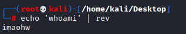
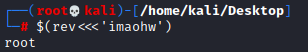

Reversed Commands (Linux Windows)
Linux1. To create the reversed command
2. Execute the reverse command in a subshell $()
Windows1. To create the reversed command
"whoami"[-1..-20] -join ''
2. Execute the reverse command in a subshell $()
iex "$('imaohw'[-1..-20] -join '')"